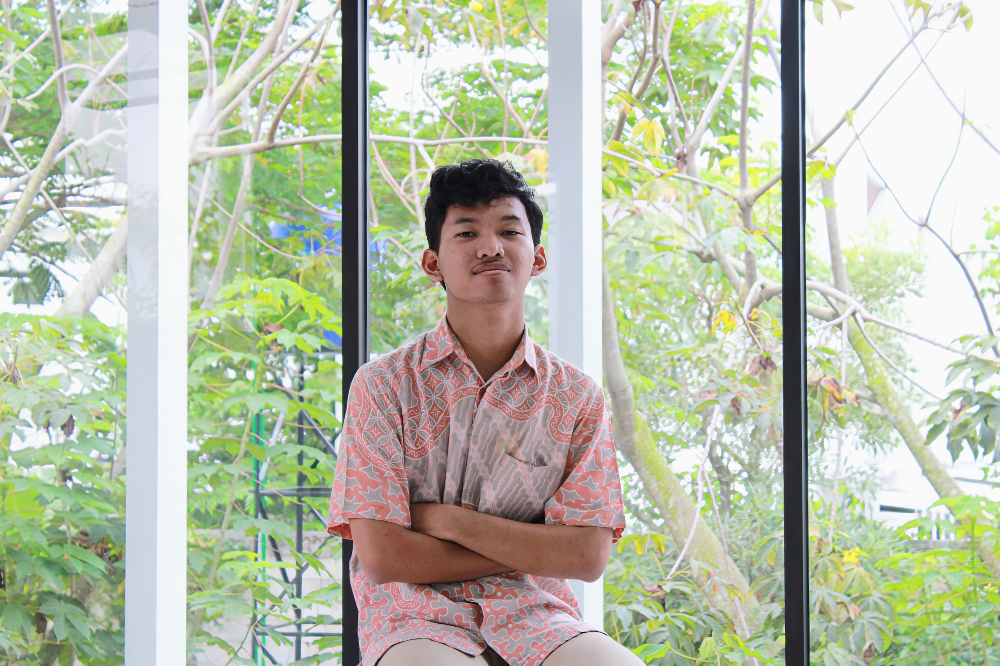

Project Perkuliahan
Analisis Perancangan Sistem Informasi
Pada mata kuliah APSI, saya merancang desain aplikasi Scanning Sampah menggunakan Figma, dengan fokus pada wireframe dan antarmuka yang mendukung proses pemilahan sampah secara efisien dan user-friendly.
Internet Of Things
Saya sedang mengembangkan proyek IoT Smart Door Lock untuk mata kuliah Internet of Things, dengan fokus pada sistem pengamanan pintu berbasis sensor dan kontrol otomatis yang saat ini masih dalam tahap pengembangan.